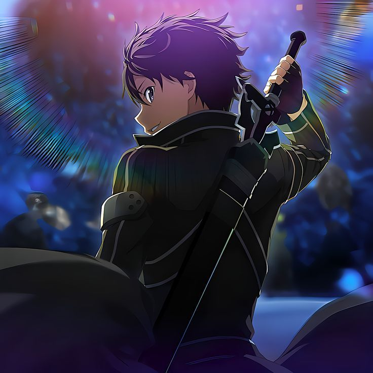
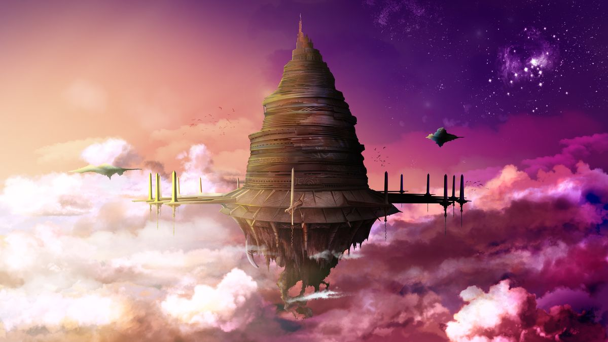
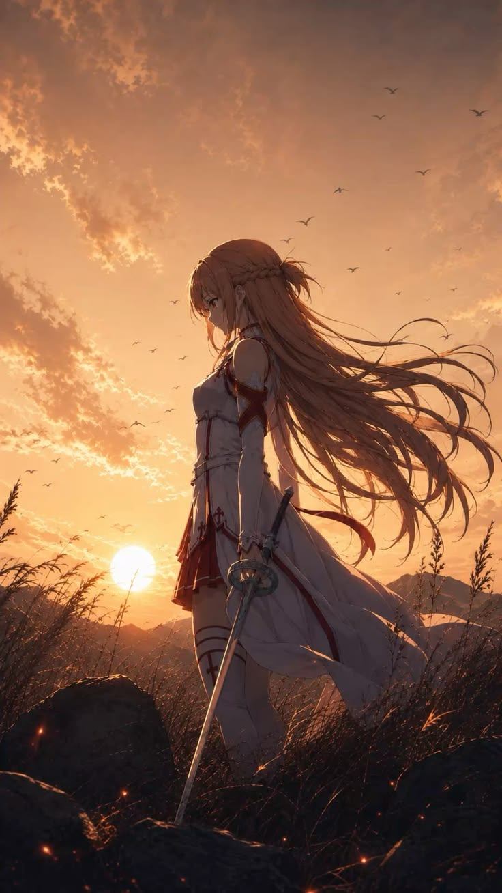

Кіріто

Гравець-одинак і колишній бета-тестер. Єдиний, хто володіє навичкою двох мечів.
Фан-сайт про механіку гри, історію та героїв
6 листопада 2022 року десять тисяч гравців увійшли в гру Sword Art Online і не змогли з неї вийти. Тут ти дізнаєшся, як влаштований світ гри, що сталося на початку та хто в ньому виживав.

Айнкрад — величезний залізний замок, що висить у небі. Він складається зі 100 поверхів. На кожному є місто, лабіринт і бос, якого потрібно перемогти.
Творець гри Каяба Акіхіко оголосив у Місті Початку, що вийти з гри неможливо. Щоб повернутись додому, потрібно пройти всі 100 поверхів. За два роки загинуло близько 4000 гравців.

Гравець-одинак і колишній бета-тестер. Єдиний, хто володіє навичкою двох мечів.

Майстриня рапіри, заступниця командира гільдії Лицарі Кривавої Клятви.
Перший друг Кіріто в грі та лідер гільдії Фурінкадзан. Воїн із катаною.
Штучний інтелект, якого Кіріто й Асуна знаходять на 22-му поверсі та ростять як доньку.
Найсильніша гільдія Айнкрада, її очолює Хізкліф.
Найбільша гільдія гри, що стежила за порядком на нижніх поверхах.
Дружня гільдія Клейна, яка часто допомагає Кіріто.
Злий клан убивць на чолі з PoH, що вбивав гравців заради розваги.